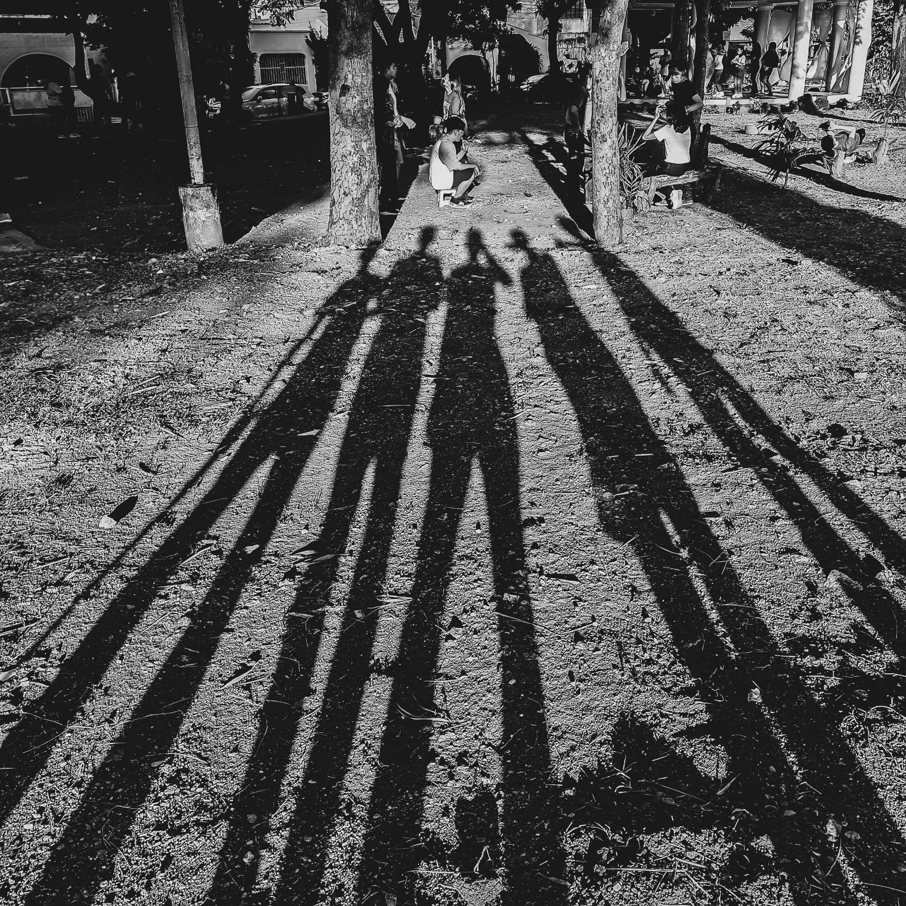

Play Music for Relaxing Experience.(LOTR Music: Sound of the Shire)
My full name is Jude Isaac S. James. I am 14 years old. I was born on July 6, 2010. I am a student at Las Piñas City National Science High School.
My Hobbies
My Hobbies are reading self-help books, studying academic subjects, playing sports (Chess:Mental Sport, Volleyball:Physical Sport) and video games (Call of Duty, Mobile Legends), drawing, exercising, listening to music, doing photography, spending time with my family, and talking with true friends.

An example of my photography
Books
I have read many books. I also want to read more books about philosophy, academics, religion, culture, and more. Here are some of the books I want to read (or done reading):
Daily Stoic Series
The Daily Stoic: 366 Meditations
The Obstacle is the Way
Ego is the Enemy
Stillness is the Key
Courage is Calling
Discipline is Destiny
Right Thing, Right Now
Philosophy
Meditations
Letters from a Stoic
The Art of War
The Art of War and Other Eastern Philosophies
History
American Prometheus: The Triumph and Tragedy of J. Robert Oppenheimer
The Anglo-Saxons
The Ultimate Illustrated History of World War 1
Religion
The New American Bible
Self-help
The Power of Habit
Emotional Intelligence
How to De-Stress Your Life
The Complete Book of Success
The Art of Thinking Clearly
Better than Before
The One Thing
Music
I am interested in different genres of music. I like classical, pop, and rock music the most. Here's a list of some of my favorite songs: